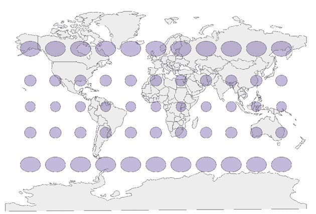

Detrás de cada mapa hay una decisión técnica crucial: la proyección cartográfica, que define cómo se traduce la superficie curva de la Tierra a un plano. Esta decisión afecta profundamente lo que el mapa puede representar y cómo lo percibimos.
Importancia de las proyecciones
¿Qué es una proyección cartográfica?
Una proyección cartográfica es el método matemático o geométrico que se utiliza para trasladar las coordenadas de un elipsoide (la Tierra) a una superficie plana. Este proceso es fundamental porque:
- La Tierra es un objeto tridimensional con una superficie curva.
- Cualquier intento plasmarla en un plano implica distorsiones inevitables en áreas, formas, distancias o direcciones.
Estas distorsiones no son meros errores, sino elecciones conscientes del cartógrafo, dependiendo del propósito del mapa. Por ello, entender las proyecciones es esencial para interpretar correctamente cualquier representación cartográfica.

Fuente: GIS and Beers
Obra publicada con Licencia Creative Commons Reconocimiento Compartir igual 4.0